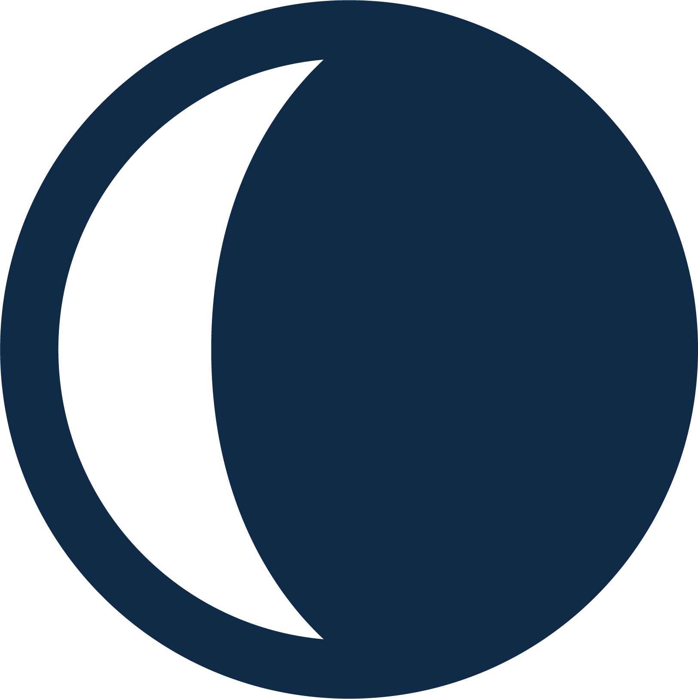

in de sterren
Gebruik de kennis van astrologie om je droomleven werkelijkheid te maken. Ik help je er graag bij. Lees hier meer over het aanbod en de tarieven.
Gebruik de kennis van astrologie om je droomleven werkelijkheid te maken. Ik help je er graag bij. Lees hier meer over het aanbod en de tarieven.

Op 6 september 1996 werd ik geboren. De zon stond toen in het teken Maagd, de maan in Kreeft. Mijn ascendant werd Schorpioen. Het maakte me een kind dat altijd bezig was met haar creatieve projectjes. Ik tekende en schilderde veel, begon in groep drie met het uitbrengen van een eigen schoolkrant. In groep vier schreef ik mijn eerste boek. Waarschijnlijk was het meest memorabele rapport een resultaat van mijn maan in Kreeft: 'groot gevoel voor dramatiek' schreef de juf toen ik zeven was.
Op de middelbare school leerde ik mijn ascendant in Schorpioen echt kennen. Zonder humoristische en creatieve mensen om me heen keerde ik naar binnen en vonden mijn klasgenoten me al snel 'anders'. Op school had ik nauwelijks vrienden en voelde ik me niet thuis, maar mijn Saturnus in Ram trok me al snel toe naar de debatclub en de leerlingenraad, waar ik wel gelijkgestemden kon vinden. Jupiter in het derde huis zorgde ervoor dat ik mijn passie voor schrijven niet kon vermijden. Zo begon ik te bloggen voor grote jongerenwebsites en een krant op mijn veertiende. Met zeventien was ik redacteur van een bekend opiniemedium en spijbelde ik halve dagen om politici te interviewen en congressen over onderwijsvernieuwing bij te wonen voor een landelijk nieuwsblad. Mijn columns bleken iedere week op het prikbord in de lerarenkamer te hangen.

Uiteindelijk was mijn schoolloopbaan lastig. Buiten school om was ik een bezige bij (in deze periode ontwikkelde ik ook een liefde voor astrologie), maar in het klaslokaal voelde ik me niet thuis. Met veel omwegen, blijven zitten en weer klassen overslaan haalde ik uiteindelijk mijn VWO-diploma en ruilde ik mijn geboortedorp zo snel als ik kon in voor een studie geschiedenis aan de Universiteit van Amsterdam. Binnen het vrije en volwassen systeem van de universiteit kon ik wel schitteren: ik deed een honoursprogramma en studeerde in 2019 af met een acht voor mijn scriptie over een spirituele dichteres in de negentiende eeuw.
Tijdens mijn bachelor begon mijn spirituele reis. Ik werd vaste klant bij een energiewerker, bezocht mediums, leerde over hoogsensitiviteit en hoogbegaafdheid en las nog meer over astrologie. Tegelijkertijd werkte ik bij een grote uitgeverij, liep ik stage bij een onderzoeksinstituut en begon ik een eigen bedrijf als freelance redacteur. Mars in het tiende huis zorgde ervoor dat ik op mijn tweeëntwintigste een CV van acht kantjes had opgebouwd en altijd hongerig was voor nieuwe ervaringen en uitdagingen.
Na mijn bachelor begon ik aan een researchmaster geschiedenis aan de UvA, waarin ik me specialiseer in cultuurgeschiedenis en literatuurgeschiedenis. Mijn specifieke interesse gaat uit naar spirituele intellectuelen rond de eeuwwisseling van de negentiende en de twintigste eeuw. Het komende jaar zal ik me binnen dit programma verder verdiepen in de geschiedenis van de astrologie en het occulte. Met mijn Maan in het achtste huis hoort het spirituele pad bij me en kan ik het onmogelijk nog uit mijn leven wegdenken. In 2019 werd ik wakkergeschud door mijn roeping om te verbinden en anderen te helpen, vastgelegd door de noordelijke maanknoop in Weegschaal. Ik startte In de sterren en begon met het aanbieden van workshops en lezingen.
Als coach en astroloog ben ik goed in het onzichtbare zichtbaar maken en het complexe begrijpelijk maken. Ik ga altijd door tot de ander zich echt geholpen voelt en pak mijn sessies graag aan met een goede scheut humor. Mijn cliënten prijzen me vooral vanwege mijn grote kennisbasis over het onderwerp en talent voor het verhelderen.
Het komende jaar wil ik In de sterren door laten groeien, ga ik de grote stad weer verlaten om in de natuur te wonen en daar in rust en reflectie te schrijven en met mijn cliënten te werken. In 2020 hoop ik een boek te mogen schrijven en nog meer mensen te bereiken met mijn werk als astroloog.
Wil je met mij werken? Lees hier meer over de diensten die ik aanbied.